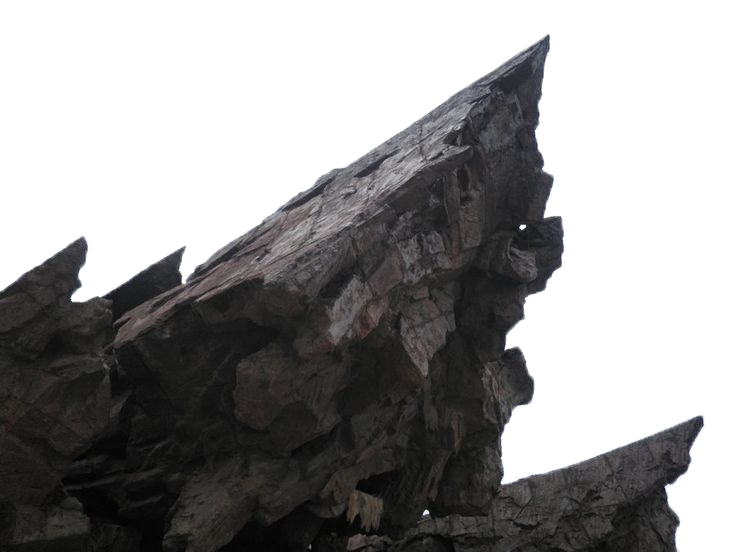
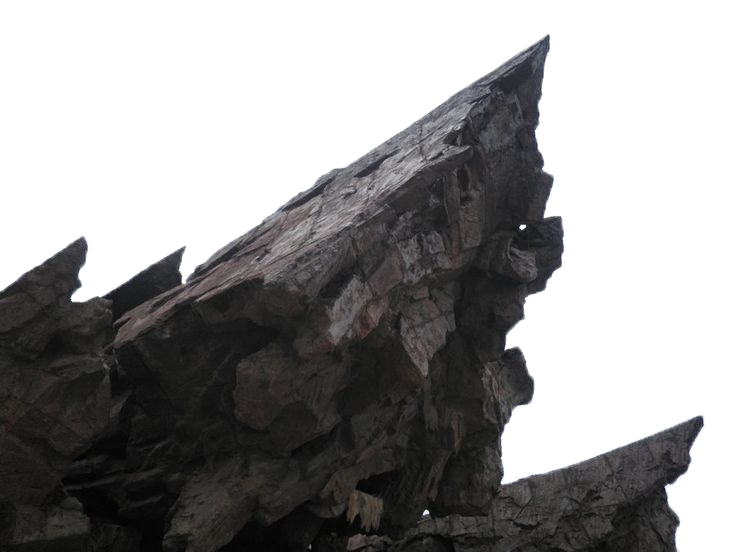

Light & Shadow
Museum
London
1234AB
Upsidedown soda


 



Introduction

The Light and Shadow Museum is a captivating destination dedicated to the art and science of illumination and its interplay with darkness. This unique institution celebrates the beauty of contrasts, showcasing how light and shadow shape perception, emotion, and storytelling across cultures and eras. Since its inception, the museum has been a beacon for artists, scientists, and curious minds, inviting them to explore the fascinating dynamics of luminescence and obscurity.

The Light and Shadow Museum also hosts workshops, lectures, and night-time events, creating a vibrant community for enthusiasts of all ages. As both a testament to the power of contrast and a source of endless inspiration, the museum continues to shine brightly as a cultural and educational landmark.